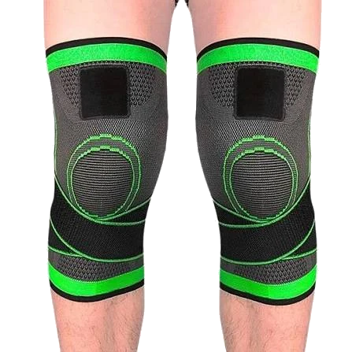
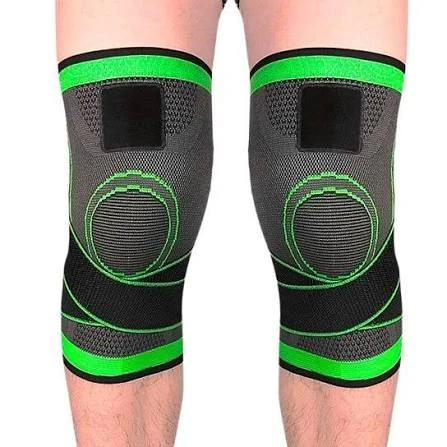
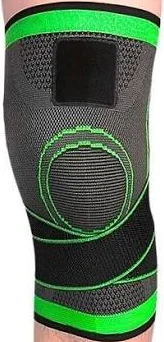

Painel circular
O contorno verde destaca a trama horizontal na frente do joelho.
Joelheira esportiva
Joelheira preta com faixas verdes. Veja como fica no joelho e confira o acabamento.
Ver a joelheira

O painel circular fica na frente do joelho. As faixas verdes contornam as bordas do modelo.
Garantir minha joelheira Informações de compra
O contorno verde destaca a trama horizontal na frente do joelho.
O verde aparece nas extremidades do modelo.
As instruções de colocação e ajuste ainda aguardam o manual do fabricante.
Informações de compra
A compra ainda não está disponível.
Garantir minha joelheiraPagamento, entrega e devolução serão informados quando a compra estiver disponível.
A tabela de medidas ainda não foi divulgada.
As instruções de ajuste ainda aguardam o manual do fabricante.
O fabricante ainda precisa confirmar para quais atividades o modelo é indicado.
As orientações de lavagem e secagem ainda precisam ser confirmadas.
As condições de entrega serão informadas quando a compra estiver disponível.
Em caso de lesão, a joelheira não substitui avaliação de um profissional de saúde.